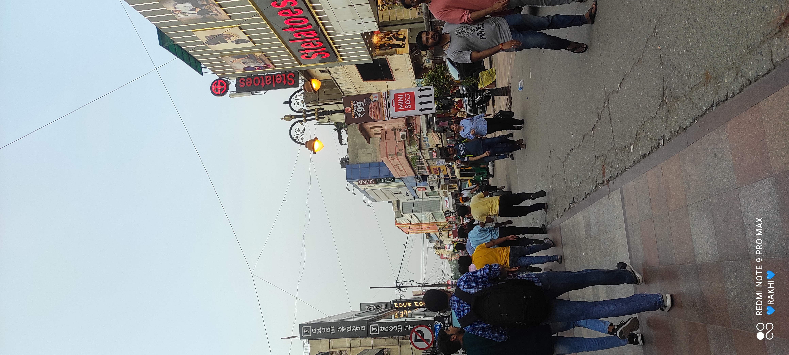

Indira Gandhi International Airport
Karol Bagh
Indira Gandhi International Airport

Iskcon Temple
Delhi has a long history that goes back thousands of years. It was the capital of many powerful empires and witnessed significant events.
So, it’s like a history book of India.
Delhi is where the Indian government works from. Important decisions about the country are made
here. It’s like the control center of India’s administration,it is a mix of cultures and languages represents the whole of India.
It’s like a mini-India.
| Indira Gandhi International Airport |
 Karol Bagh |
| Indira Gandhi International Airport |
Iskcon Temple |